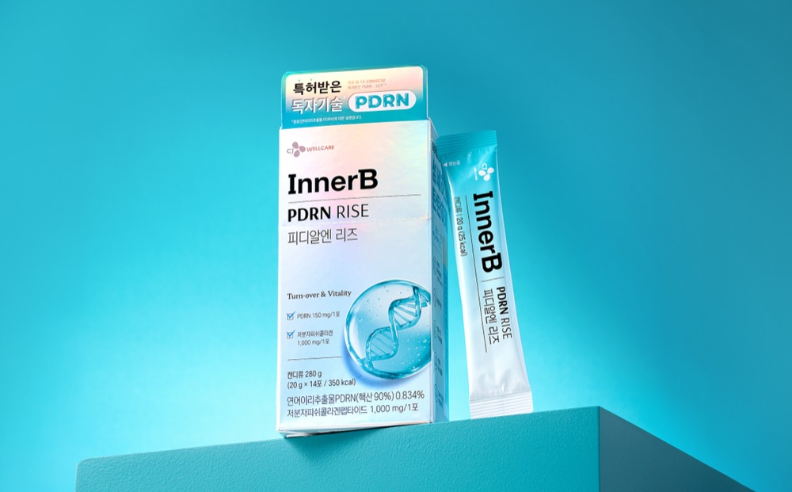
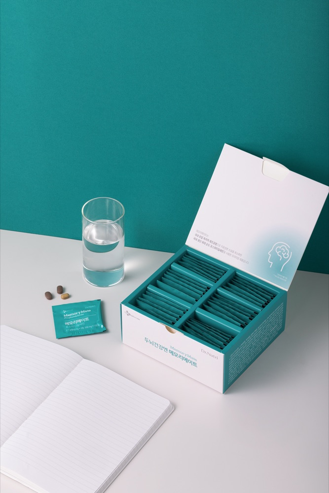
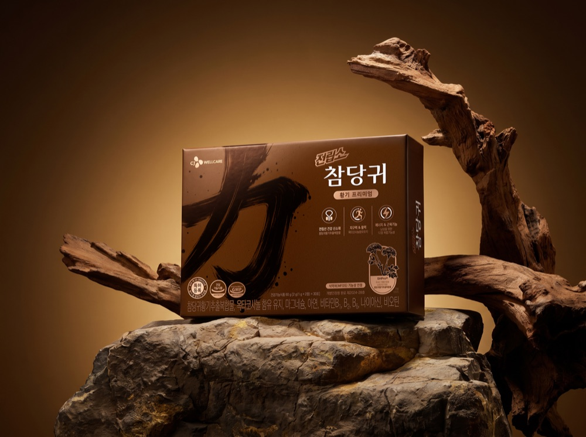
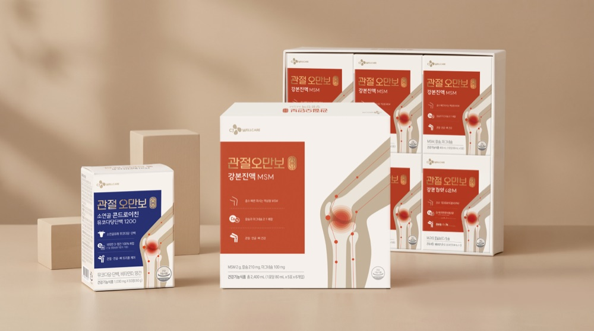

Solutions
고민에서 시작하는
고민에서 시작하는
나만의 솔루션
장 건강부터 이너뷰티, 수면, 기초영양, K-웰니스까지. 12개 브랜드를 당신의 고민과 하루의 흐름에 맞춰 찾아보세요.
요즘 가장 신경 쓰이는 건?
 Gut HealthCJLP133
Gut HealthCJLP133바이오코어
유산균의 코어가 남다르니깐! 고함량, 고기능성 유산균의 기준
 Gut HealthCJ바이오사이언스
Gut HealthCJ바이오사이언스맥플랜 MAC PLAN
식이섬유 섭취의 새로운 기준, 미생물 밸런스를 위한 MACPLAN

Beauty이너비 InnerB
Always Be Me, 균형 잡힌 이너뷰티 루틴을 전하는 브랜드
 Mental국내 최초 식물성 멜라토닌 구미
Mental국내 최초 식물성 멜라토닌 구미멜라메이트
나의 첫 나이트 메이트, 오늘 밤은 혼자가 아니야

Mental메모리메이트 & 브레인메이트
선명하고 또렷한 하루, 매일의 일상을 지키는 두뇌 건강 케어
 Basic Nutrition
Basic Nutrition닥터뉴트리 Dr.Nutri
나만의 건강관리 솔루션, 좋은 원료와 합리적 가격으로 꾸준하게
 Basic Nutrition
Basic Nutrition아이시안
현대인의 맞춤 눈 건강 케어, EYE + SEE + 안(安)

Basic Nutrition개별인정형 원료전립소
남성의 자신감과 활력을 위한 전립선 건강 솔루션

Basic Nutrition관절오만보
오만보를 걷는 열정을 만드는 관절 케어 브랜드
 Kids
Kids얌그루
잘 먹고 바르게 성장하는 우리 아이를 위한 건강 솔루션
 K-Wellness흑삼 FDA NDI
K-Wellness흑삼 FDA NDI한뿌리
정통 보양의 변치 않는 기준, 시간과 정성으로 빚어낸 한뿌리
 K-Wellness
K-Wellness제일건강원
매일의 일상을 깨우는 새로운 기준, 현대인을 위한 제일건강원
목업 안내: 브랜드 상세는 바이오코어 페이지를 대표 템플릿으로 제작했습니다.
Science Inside모든 브랜드 안에는
연구 근거 전체 보기
모든 브랜드 안에는
과학이 있습니다
브랜드마다 출발점이 된 기술과 근거를 함께 보여드립니다.
ShopCJ웰케어 제품은
CJ웰케어 제품은
CJ더마켓에서 만나보세요
건강기능식품 안내 · 건강기능식품은 질병의 예방 및 치료를 위한 의약품이 아닙니다. 제품 정보와 문구는 기존 CJ웰케어 홈페이지 브랜드 소개를 인용했습니다.